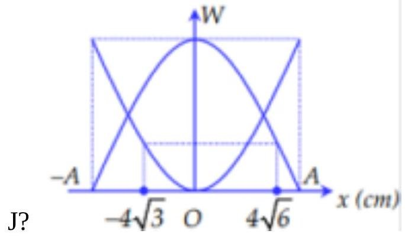

📋 Quy định làm bài
- Thời gian: 45 phút. Còn 10 phút hệ thống nhắc; hết giờ có thêm 5 phút gia hạn rồi tự động nộp.
- Bài làm ở chế độ toàn màn hình. Chuyển tab, mất focus, thoát toàn màn hình đều bị ghi nhận và báo cho giáo viên.
- Không dùng chuột phải, sao chép/dán, phím tắt. Trợ lý AI chỉ mở sau khi nộp bài. Phần tự luận: AI gợi ý điểm, giáo viên duyệt điểm chính thức.
PHẦN I. Câu trắc nghiệm nhiều phương án lựa chọn
Mỗi câu có 4 phương án, chỉ chọn một đáp án đúng (0,25 điểm).
1
Theo định nghĩa. Dao động điều hòa là
2
Vật dao động điều hòa theo trục Ox . Phát biểu nào sau đây đúng?
3
Trong dao động điều hòa, đại lượng nào sau đây không có giá trị âm?
4
Đồ thị li độ theo thời gian của dao động điều hòa là một
5
Dao động là chuyển động có
6
Dao động điều hòa có thể được coi như hình chiếu của một chuyển động tròn đều xuống một
7
Một vật dao động điều hòa theo phương trình $x=A\cos(\omega t+\varphi)$ với $\omega$ là hằng số thì pha của dao động
8
Phương trình dao động điều hòa của một chất điểm có dạng $x=A\cos(\omega t+\varphi)$. Độ dài quỹ đạo của dao động là
9
Một vật nhỏ dao động điều hòa theo phương trình $x=A\cos(10t)$ ($t$ tính bằng s). Tại $t=2$ s, pha của dao động là
10
Đại lượng nào dưới đây đặc trưng cho độ lệch về thời gian giữa hai dao động điều hòa cùng chu kì?
11
Biên độ của hệ dao động điều hòa phụ thuộc yếu tố nào?
12
Pha của dao động được dùng để xác định
13
Chu kì dao động là
14
Một vật dao động điều hòa, mỗi chu kỳ dao động vật đi qua VTCB
15
Đồ thị biểu diễn hai dao động điều hòa cùng phương, cùng tần số, cùng biên độ A như hình vẽ. Hai dao động này luôn

16
Một chất điểm dao động điều hoà có chu kì $T$. Tần số góc $\omega$ của dao động là
17
Một chất điểm dao động điều hoà có tần số góc $20\pi$ rad/s. Tần số của dao động là
PHẦN II. Câu trắc nghiệm đúng sai
Trong mỗi ý a), b), c), d) chọn Đúng hoặc Sai. Đúng 1 ý: 0,1 · 2 ý: 0,25 · 3 ý: 0,5 · 4 ý: 1,0 điểm.
1
Cho đồ thị li độ theo thời gian của một vật dao động điều hoà như hình vẽ:

a) Biên độ dao động của vật bằng $0,20\text{ cm}$.
b) Chu kì dao động của vật bằng $0,4\text{ s}$
c) Pha ban đầu của dao động là $-\frac{\pi}{2}$ rad.
d) Tại thời điểm $t=0,2\text{ s}$ vật ở vị trí biên.
PHẦN III. Câu trắc nghiệm trả lời ngắn
Điền đáp số (có thể dùng dấu phẩy hoặc dấu chấm thập phân). Mỗi câu 0,25 điểm.
1
Một con lắc lò xo có độ cứng $k=50\text{ N/m}$ đang dao động điều hòa với đồ thị biểu diễn sự phụ thuộc của động năng và thế năng vào li độ như hình vẽ. Cơ năng của dao động bằng bao nhiêu J?

J
2
Một người xách một xô nước đi trên đường, mỗi bước đi được 50 cm . Chu kì dao động riêng của nước trong xô là 1 s . Nước trong xô sóng sánh mạnh nhất khi người đó đi với tốc độ là bao nhiêu cm/s ?
cm/s
3
Một vật dao động điều hòa trên trục Ox . Hình dưới là đồ thị biểu diễn sự phụ thuộc của li độ vào thời gian . Chu kỳ dao động của vật bao nhiêu giây?

s
4
Một con lắc lò xo dao động điều hòa. Lò xo có độ cứng $k=80\text{ N/m}$. Trong một chu kì, con lắc đi được một đoạn đường dài 20 cm . Cơ năng của con lắc là bao nhiêu J?
J
5
Một chất điểm chuyển động tròn đều trên đường tròn tâm O bán kính 10 cm với tốc độ góc $\omega=5\text{ rad/s}$. Hình chiếu của chất điểm lên trục Ox nằm trong mặt phẳng quỹ đạo có tốc độ cực đại là bao nhiêu cm/s ?
cm/s